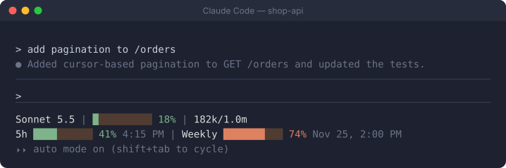
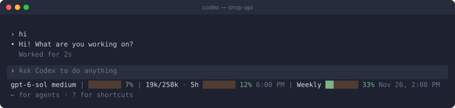
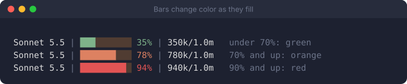
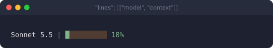
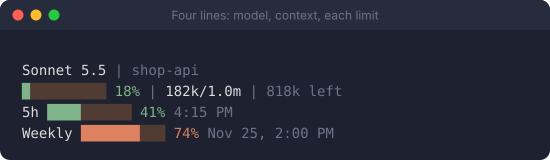
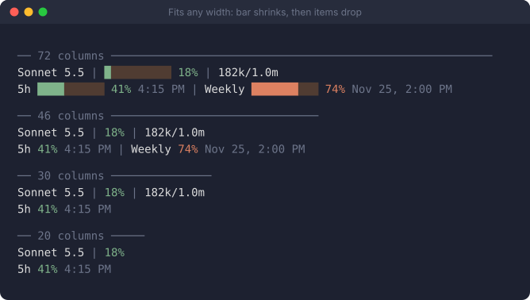
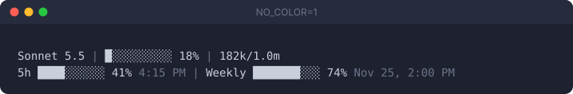
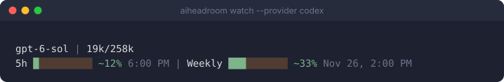

AI Headroom แสดงชื่อโมเดล, context window และโควตา 5 ชั่วโมง/รายสัปดาห์ เป็นแถบสีใน Claude Code และ OpenAI Codex CLI จัดวางได้ตามใจ ไม่ส่งข้อมูลออกไปไหน AI Headroom shows the model, context window and 5-hour / weekly limits as colored bars in Claude Code and OpenAI Codex CLI. Arrange it your way. No telemetry.
npm install -g https://github.com/Pug-03/AI-Headroom/archive/refs/heads/main.tar.gz && aiheadroom install --wrap

ทุกอย่างที่อยากรู้ระหว่างทำงานกับ AI อยู่ในบรรทัดเดียวหรือสองบรรทัด ไม่ต้องพิมพ์ /status หรือเปิดเว็บเช็กโควตา
Everything you check while working with an AI agent, in one or two lines. No more typing /status or opening a usage page.
ชื่อโมเดลที่ใช้อยู่ แถบ context window และจำนวน token เช่น 182k/1.0m อัปเดตทุกครั้งที่ CLI รีเฟรชThe current model, a context-window bar and token counts like 182k/1.0m, updated every time the CLI refreshes.
โควตา 5 ชั่วโมงและรายสัปดาห์ บอกว่าจะรีเซ็ตกี่โมง ถ้า CLI ไม่ได้ส่งค่ามา AI Headroom จะไม่แต่งตัวเลขขึ้นเอง5-hour and weekly limits with the time they reset. If the CLI doesn't report a limit, AI Headroom won't make one up.
เขียวเมื่อต่ำกว่า 70% ส้มตั้งแต่ 70% แดงตั้งแต่ 90% มองแวบเดียวก็รู้ว่าใกล้เต็มหรือยังGreen below 70%, orange from 70%, red from 90%. One glance tells you how close you are.
เลือกเองว่าแต่ละบรรทัดมีอะไร เรียงยังไง ใช้ตัวคั่นแบบไหน และแยก layout ของ Claude กับ Codex ได้Pick what goes on each line, in what order, with which separator. Separate layouts for Claude and Codex.
จอแคบลงเมื่อไหร่ แถบจะหดก่อน แล้วค่อยตัดรายการท้ายๆ ออก จึงไม่ขึ้นบรรทัดใหม่จนเละWhen the terminal gets narrow the bar shrinks first, then trailing items drop, so the line never wraps into a mess.
ไม่มี telemetry ไม่ต่อเน็ตถ้าไม่เปิดเอง และไม่เปิดไฟล์รหัสผ่านของ Codex (มีเทสต์คอยตรวจ)No telemetry, no network unless you opt in, and it never opens Codex's credentials file (a test enforces this).
--wrap เก็บ status line เดิมของคุณไว้ข้างหน้า เครื่องมืออย่าง AFK Pug ยังทำงานได้ และถอดออกได้สะอาด--wrap keeps your existing status line command in front, so tools like AFK Pug keep working. Uninstall restores it exactly.
แยก adapter ออกจากตัววาด การรองรับ AI CLI ตัวใหม่คือการเพิ่มไฟล์เดียวAdapters are separate from rendering. Supporting a new AI CLI means adding one file.
ทุกภาพสร้างจากโค้ด layout ตัวเดียวกับที่โปรแกรมใช้จริง (npm run images) ใช้ข้อมูลตัวอย่าง
Every image is generated by the same layout code the CLI uses (npm run images), with sample data.

·
Uses Codex's own status line provider. The Codex footer is a single row, so AI Headroom joins your lines with ·.


· แถบสั้น 6 ช่อง ไม่แสดงเวลารีเซ็ต และใส่ข้อความเองด้วย text:◆
· separator, 6-cell bars, no reset times, and literal text with text:◆.



NO_COLOR=1 ส่วนที่ว่างของแถบจะเป็น ░ ให้ยังอ่านออก
Set NO_COLOR=1 for plain text; the empty part of a bar becomes ░ so it stays readable.

watch) จะมี ~ นำหน้า ให้รู้ว่าไม่ใช่ค่าสดจาก CLI
Numbers read from local session logs (e.g. watch mode) get a ~ so you know they aren't live values.
ต้องมี Node.js 22.18 ขึ้นไป AI Headroom จะไม่ทับ status line เดิมของคุณถ้าไม่สั่ง Requires Node.js 22.18 or newer. AI Headroom never overwrites your existing status line unless you ask.
# 1. install npm install -g https://github.com/Pug-03/AI-Headroom/archive/refs/heads/main.tar.gz # 2. check aiheadroom doctor
aiheadroom install --claude --wrap --dry-run
aiheadroom install --claude --wrap
--wrap เก็บคำสั่งเดิมไว้ข้างหน้า ถ้าอยากแทนที่เลยใช้ --force ทั้งสองแบบสำรอง settings.json ก่อนแก้--wrap keeps your current command in front; --force replaces it. Both back up settings.json first.
aiheadroom install --codex
คำสั่งนี้รัน codex mcp add aiheadroom … ให้This runs codex mcp add aiheadroom … for you.
/experimental ติ๊ก Custom status line แล้วรีสตาร์ท CodexIn Codex, open /experimental, check Custom status line, and restart Codex./statusline → Choose a status line provider → AI HeadroomSend one message, then /statusline → Choose a status line provider → AI Headroom.
ทำครั้งเดียว Codex จะจำไว้ ถ้าวันหนึ่งฟุตเตอร์กลับเป็นแบบเดิม แปลว่า provider อ่านพลาด กด F2 เพื่อดูสาเหตุ แล้วเลือก AI Headroom ใน /statusline ใหม่ ระบบ provider ของ Codex ยังเป็น experimental
You only do this once. If the footer ever falls back to the default, a read failed: press F2 to see why, then reselect AI Headroom in /statusline. Codex's provider API is still experimental.
ถ้า CLI ไม่มีที่ให้ใส่ status line ให้เปิด AI Headroom ในแผง tmux หรือแท็บข้างๆ มันจะวาดใหม่ทุก 2 วินาทีIf a CLI has no status line hook, run AI Headroom in a tmux pane or a spare tab. It redraws every 2 seconds.
aiheadroom watch --provider codex --interval 2
aiheadroom uninstall # Claude + Codex; restores your previous status line
npm uninstall -g aiheadroom
หนึ่ง array คือหนึ่งบรรทัด เรียงจากบนลงล่าง ของในวงเล็บเรียงจากซ้ายไปขวา แก้แล้ว Codex เห็นผลในราว 1 วินาที One array per line, top to bottom; items go left to right. Codex picks up edits within about a second.
aiheadroom config init # create the file aiheadroom items # list widgets aiheadroom preview # try it with sample data
// ~/.config/aiheadroom/config.json { "lines": [ ["model", "context", "tokens"], ["limit-5h", "limit-weekly"] ], "providers": { "codex": { "lines": [["model", "context", "limits"]] } }, "separator": "|", "barWidth": 10, "showResets": true }
| Widget | แสดงShows |
|---|---|
model | ชื่อโมเดลModel name |
context | แถบ context + %Context bar and percent |
tokens | token ที่ใช้ / ทั้งหมดTokens used / window |
remaining | token ที่เหลือTokens left |
limit-5h | โควตา 5 ชั่วโมง5-hour limit |
limit-weekly | โควตารายสัปดาห์Weekly limit |
limits | โควตาทุกตัวที่ CLI ส่งมาEvery limit the CLI reports |
cwd | ชื่อโฟลเดอร์Folder name |
provider | claude / codex |
text:… | ข้อความที่พิมพ์เองYour own text |
ใส่ค่าผิดไม่พัง AI Headroom จะใช้ค่าเริ่มต้นแทน และ aiheadroom doctor จะบอกว่าผิดตรงไหน
Bad values don't break anything: AI Headroom falls back to defaults and aiheadroom doctor tells you what's wrong.
Claude Code ส่ง JSON มาให้ทาง stdin ทุกครั้งที่รีเฟรช ส่วน Codex ส่งสถานะของ thread มาให้ provider ประมาณทุก 1 วินาที AI Headroom แค่อ่านแล้ววาดClaude Code pipes JSON on stdin on every refresh. Codex passes thread state to the provider about once a second. AI Headroom just reads it and draws.
ฟุตเตอร์ของ Codex ไม่มีคำสั่งขึ้นบรรทัดใหม่ และไม่รับตัวอักษรควบคุมอย่าง \n AI Headroom จึงต่อบรรทัดด้วย · ถ้ายาวเกินจอ Codex จะตัดขึ้นบรรทัดให้เองThe Codex footer has no line-break element and rejects control characters like \n, so AI Headroom joins lines with ·. Codex wraps it if it's wider than the terminal.
AI Headroom แสดงเฉพาะค่าที่ CLI ส่งมาจริง ถ้ายังไม่ได้ล็อกอิน หรือแพ็กเกจไม่มีโควตา บรรทัดนั้นจะหายไป สำหรับ Claude เปิดการดึงผ่าน usage API ได้ (ต้องเปิดเอง): {"claude": {"oauthUsage": true}}AI Headroom only shows what the CLI reports. If you're logged out or your plan has no limits, that line disappears. For Claude you can opt in to the usage API: {"claude": {"oauthUsage": true}}.
ได้ ใช้ --wrap คำสั่งเดิมยังได้รับ stdin ตามปกติ AI Headroom แค่เป็นตัววาด และ aiheadroom uninstall คืนคำสั่งเดิมให้ครบทุกตัวอักษรYes. With --wrap your command still receives stdin; AI Headroom only does the drawing. aiheadroom uninstall restores the exact original command.
AI Headroom อ่านแค่ session log และบรรทัด model ใน config ของ Codex ไม่เปิดไฟล์รหัสผ่าน ไม่มี telemetry และไม่ต่อเน็ตถ้าคุณไม่เปิด usage API เอง โค้ดเป็น MIT อ่านได้ทุกบรรทัดAI Headroom reads only Codex session logs and the model line of its config, never the credentials file. No telemetry, no network unless you enable the usage API. MIT-licensed, every line readable.